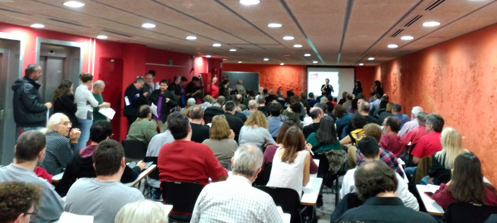
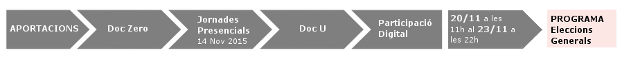

¿Cómo es el proceso de participación?
Metodología
- Las propuestas que presentamos aquí nacen de un documento inicial en el que numerosas organizaciones y personas han participado y sobre el que 400 personas debatieron en una jornada presencial el pasado sábado 14 de noviembre (imagen), realizada simultáneamente en Barcelona, Girona, Lleida y Tarragona.
- Ahora llevamos estas propuestas al debate en la red, para que se discutan y amplíen.
- De esta fase se recogerán nuevas aportaciones, en concreto, las 5 propuestas más votadas de cada bloque se incorporarán al programa. También se recogerán las aportaciones sobre las propuestas que planteamos de inicio.
- Los criterios de incorporación de las propuestas realizadas se basarán en la congruencia de las mismas, que sean acordes a la temática que se trata en cada discusión, su viabilidad económica y legal, su coherencia con los principios basicos de la candidatura En Comu Podem -recogidos en el manifiesto- y, obviamente, que sean respetuosas con los derechos humanos.
